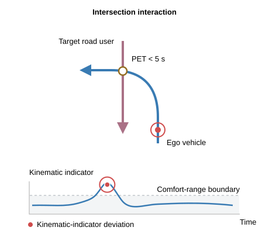
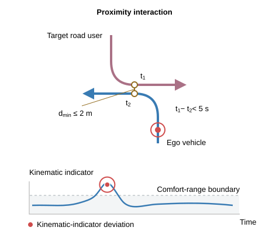
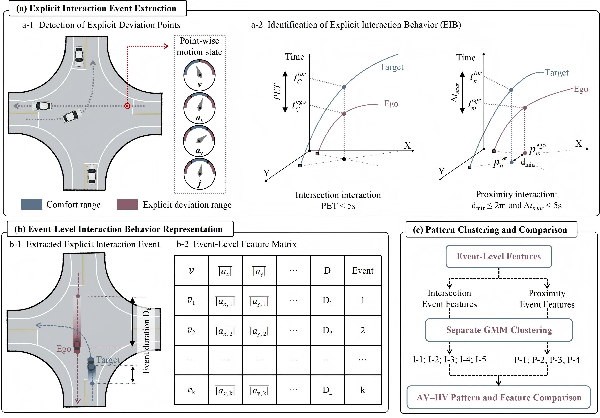
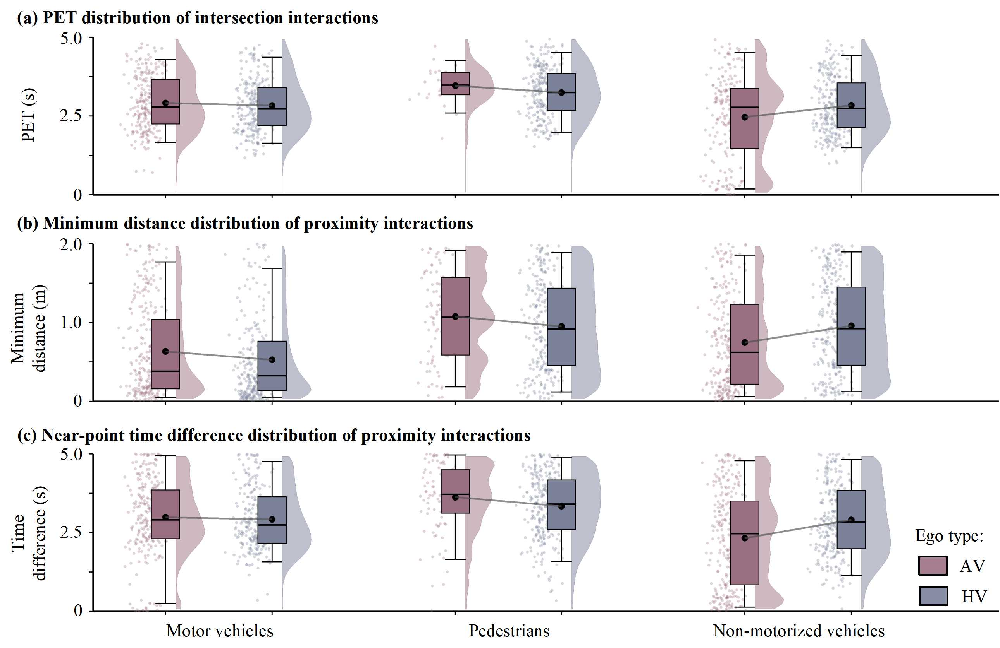

What is explicit interaction behavior?
Explicit interaction behavior (EIB) is defined by the co-occurrence of an ego vehicle's kinematic-indicator deviation from a predefined comfort range and local spatiotemporal proximity to another road user. We distinguish two types:
- Intersection interaction: The trajectories share a crossing point with a post-encroachment time (PET) below 5 s.
- Proximity interaction: When no crossing point satisfies the PET criterion, the nearest trajectory-point pair is at most 2 m apart, with an arrival-time gap below 5 s.


AV–HV interaction cases
How do we study AV–HV differences in explicit interaction behavior?
The framework below compares explicit interaction behavior between AVs and HVs through three stages:
- Explicit interaction event extraction. Detect kinematic-indicator deviation points, identify intersection or proximity interactions, and merge detections satisfying continuity criteria into events.
- Event-level interaction behavior representation. Summarize motion and spatiotemporal characteristics for each event to construct an event-level feature matrix.
- Pattern clustering and comparison. Apply Gaussian mixture models separately to intersection and proximity events, then compare pattern shares and within-pattern indicators between AVs and HVs.


Interaction event sample
Using 24 h of trajectories from three signalized intersections in Beijing, we extract 166,045 interaction events involving motor vehicles, pedestrians, and non-motorized vehicles. Of these, 114,244 have complete features and are used for subsequent comparisons and clustering. Target-type columns report all extracted events; the final column reports complete-feature events pooled across targets.
| Interaction type | Ego type | Motor vehicles | Pedestrians | Non-motorized vehicles | All events | Complete-feature events |
|---|---|---|---|---|---|---|
| Intersection | AV | 424 | 27 | 235 | 686 | 495 |
| Intersection | HV | 27,628 | 2,224 | 9,603 | 39,455 | 27,233 |
| Proximity | AV | 1,613 | 93 | 533 | 2,239 | 1,564 |
| Proximity | HV | 96,724 | 5,865 | 21,076 | 123,665 | 84,952 |
| Total | 126,389 | 8,209 | 31,447 | 166,045 | 114,244 | |
Overall AV–HV differences
Across complete-feature events, median PET is higher for AVs than HVs in all three target road-user groups. For proximity interactions, AV median minimum distances and arrival-time gaps are higher for motor-vehicle and pedestrian targets, but lower for non-motorized-vehicle targets. These differences depend on the target type, and the distributions overlap.


AV–HV differences between patterns
Separate Gaussian mixture models identify five intersection interaction patterns and four proximity interaction patterns. Their shares are compared between AVs and HVs within each target road-user type using complete-feature events. For non-motorized-vehicle targets, AVs have a 13.56 percentage-point higher I-4 share and a 9.10 percentage-point lower I-5 share than HVs. For pedestrian targets, AVs have a lower P-1 share and a higher P-2 share.

AV–HV differences within patterns
After pooling the three target road-user types, AVs have lower median deceleration ratios and mean absolute jerk in I-3 and I-5, while median PET is lower for AVs in I-3 but higher in I-5. In P-1, AVs have a larger median minimum distance but a smaller median arrival-time gap. Motion adjustments and spatiotemporal proximity therefore show different combinations of AV–HV differences within patterns.